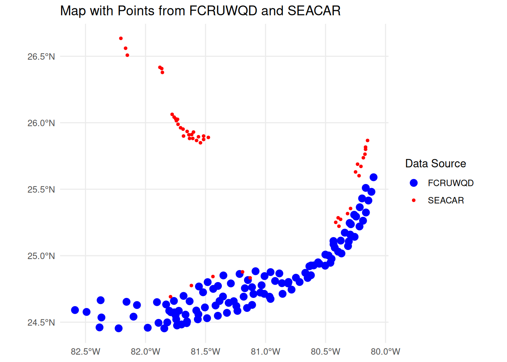

if (!requireNamespace("librarian", quietly =TRUE)) {install.packages("librarian")}librarian::shelf( dplyr, ggplot2, glue, here, leaflet, mapview, readxl, sf, tidyverse, utils)source(here("R/getIMaRSData.R"))DATA_ROOT <-here("./data/02-SEACAR_unzipped")SEACAR_ID <-sub(".*_WQ_", "", params$provider_id) # Extract the part after _WQ_
Code
# Load SEACAR file# find the .txt file (could be `Continuous WQ - N.xt` or `Discrete - N.txt`)txt_file <-list.files(path =glue("{DATA_ROOT}/{params$provider_id}/"), pattern ="\\.txt$", full.names =TRUE)seacar_data <-read_delim( txt_file,delim="|")
Rows: 116139 Columns: 36
── Column specification ────────────────────────────────────────────────────────
Delimiter: "|"
chr (20): ProgramName, Habitat, IndicatorName, ParameterName, ParameterUnit...
dbl (14): RowID, ProgramID, IndicatorID, ParameterID, ProgramLocationID, Ar...
dttm (2): SampleDate, ExportVersion
ℹ Use `spec()` to retrieve the full column specification for this data.
ℹ Specify the column types or set `show_col_types = FALSE` to quiet this message.
Code
imars_data <-getIMaRSData(params$provider_id)
Rows: 331523 Columns: 17
── Column specification ────────────────────────────────────────────────────────
Delimiter: ","
chr (4): Source, Site, Parameter, Units
dbl (13): ...1, Latitude, Longitude, Month, Day, Year, Value, Sample.Depth, ...
ℹ Use `spec()` to retrieve the full column specification for this data.
ℹ Specify the column types or set `show_col_types = FALSE` to quiet this message.
Station Locations
Click to see station names:
interactive map
FCRUWQD_unique <-distinct(imars_data, ProgramLocationID, .keep_all =TRUE)SEACAR_unique <-distinct(seacar_data, ProgramLocationID, .keep_all =TRUE)# Convert dataframes to sf objects, specifying the coordinate columns# and keeping only one row for each ProgramLocationIDFCRUWQD_sf <-st_as_sf( FCRUWQD_unique, coords =c("OriginalLongitude", "OriginalLatitude"), crs =4326)SEACAR_sf <-st_as_sf( SEACAR_unique, coords =c("OriginalLongitude", "OriginalLatitude"), crs =4326)# Create a leaflet mapleaflet() %>%# Add FCRUWQD points with popups showing station namesaddTiles() %>%addCircleMarkers(data = FCRUWQD_sf,color ="blue", radius =6,popup =~paste("Station:", FCRUWQD_unique$ProgramLocationID) # Display station name on click ) %>%# Add SEACAR points with popups showing station namesaddCircleMarkers(data = SEACAR_sf,color ="red",radius =1,popup =~paste("Station:", SEACAR_unique$ProgramLocationID) # Display station name on click ) %>%addLegend(position ="topright",colors =c("blue", "red"),labels =c("FCRUWQD Stations", "SEACAR Stations"),title ="Data Sources" )
non-interactive map for thumbnail preview
# Create the base map with ggplotggplot() +# Add FCRUWQD pointsgeom_sf(data = FCRUWQD_sf, aes(color ="FCRUWQD"), size =3) +# Add SEACAR pointsgeom_sf(data = SEACAR_sf, aes(color ="SEACAR"), size =1) +# Customize color mappingscale_color_manual(values =c("FCRUWQD"="blue", "SEACAR"="red")) +# Add labels and legendlabs(title ="Map with Points from FCRUWQD and SEACAR",color ="Data Source") +theme_minimal()

ParameterName values malignment
ParameterName columns have different values for same data. Some columns appear to not exist in both.
=== FCRUWQD ==========================
Chlorophyll a Ammonium (N) Nitrate-Nitrite (N) Nitrite (N) Nitrate (N) Silica Nitrogen- Total Nitrogen- Total Kjeldahl Phosphorus- Total Turbidity
=== SEACAR ==========================
NO2+3, Filtered Total Phosphorus Ammonium, Filtered (NH4) Chlorophyll a, Uncorrected for Pheophytin Turbidity Salinity Water Temperature Total Nitrogen Dissolved Oxygen pH Light Extinction Coefficient
Code
# Count the number of points for each reporting provider in SEACAR and DEP dataseacar_count <- seacar_data %>%group_by(ParameterName) %>%summarise(count =n())imars_count <- imars_data %>%group_by(ParameterName) %>%summarise(count =n())# Combine and display the resultscomparison_count <-full_join(seacar_count, imars_count, by ="ParameterName", suffix =c("_SEACAR", "_FCRUWQD"))# TODO: print all rows herecomparison_count
# A tibble: 20 × 3
ParameterName count_SEACAR count_FCRUWQD
<chr> <int> <int>
1 Ammonium, Filtered (NH4) 9261 NA
2 Chlorophyll a, Uncorrected for Pheophytin 9241 NA
3 Dissolved Oxygen 18215 NA
4 Light Extinction Coefficient 822 NA
5 NO2+3, Filtered 9300 NA
6 Salinity 18075 NA
7 Total Nitrogen 9296 NA
8 Total Phosphorus 9249 NA
9 Turbidity 9250 17496
10 Water Temperature 18085 NA
11 pH 5345 NA
12 Ammonium (N) NA 614
13 Chlorophyll a NA 11626
14 Nitrate (N) NA 617
15 Nitrate-Nitrite (N) NA 636
16 Nitrite (N) NA 496
17 Nitrogen- Total NA 13577
18 Nitrogen- Total Kjeldahl NA 10963
19 Phosphorus- Total NA 12252
20 Silica NA 2172
=== FCRUWQD ==========================
Ajax Reef Alligator Reef Alligator Reef #2 American Shoal Aquarius Arsenic Bank Bahia Honda Channel Bahia Honda Key Bahia Honda Offshore Bamboo Banks Bamboo Key Big Pine Bay Big Pine Shoal Blackwood Dr Bluefish Bank Bluefish Channel Boca Chica Key Boca Chica Mid Bullard Bank Bullfrog Banks Calda Channel Calusa Park Marina Carysfort Channel Carysfort Reef Channel Key
=== SEACAR ==========================
6 10 14 15 34 38 39 NA NA NA NA NA NA NA NA NA NA NA NA NA NA NA NA NA NA
TODO: compare specific stations
Cannot compare within stations until station number mapping is completed (see above section about station id malignment).
compare distributions of nutrient data
Ammonia distribution across all sites
Code
# Select relevant nutrient columns from SEACAR and DEP datasets# Plot distributions side by side for SEACAR and FCRUWQD# Combine the datasets with a new column to identify the sourcecombined_data <-bind_rows( seacar_data %>%select(ParameterName, ResultValue) %>%filter(ParameterName =="Ammonium, Filtered (NH4)") %>%mutate(Source ="SEACAR"), imars_data %>%select(ParameterName, ResultValue) %>%filter(ParameterName =="Ammonium (N)") %>%mutate(Source ="FCRUWQD"))# Plot side-by-side distributions with log-scaled x-axisggplot(combined_data, aes(x = ResultValue, fill = Source)) +geom_density(alpha =0.5) +labs(title ="Ammonium Distributions: SEACAR vs FCRUWQD (Log Scale)",x ="Nutrient Value (Log Scale)",y ="Density",fill ="Source") +scale_x_log10() +# Log scale on the x-axistheme_minimal()
Warning in scale_x_log10(): log-10 transformation introduced infinite values.
Warning: Removed 39 rows containing non-finite outside the scale range
(`stat_density()`).